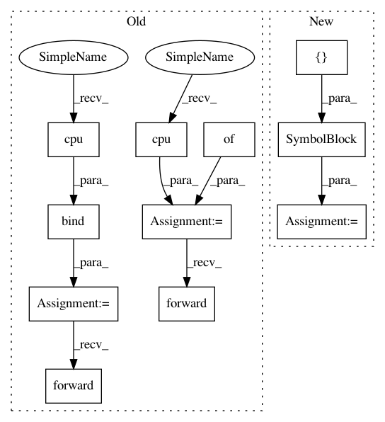

83797400128d41910d87e957131f29fd466f4777,example/extensions/lib_custom_op/test_transposerowsp.py,,,#,30
Before Change
e = mx.sym.my_transposerowsp(d)
f = mx.sym.my_state_transposerowsp(d, test_kw=200)
exe = e.bind(ctx=mx.cpu(),args={"d":a})
exe2 = f.bind(ctx=mx.cpu(),args={"d":a})
out = exe.forward()
print("Compute Results:")
print("data:", out[0].data.asnumpy())
print("indices:", out[0].indices.asnumpy())
out2 = exe2.forward()
out2 = exe2.forward()
print("Stateful Compute Result:")
print("data:", out2[0].data.asnumpy())
print("indices:", out2[0].indices.asnumpy())
After Change
print("data:", out.data.asnumpy())
print("indices:", out.indices.asnumpy())
block2 = mx.gluon.nn.SymbolBlock(f,[d])
out2 = block2(a)
out2 = block2(a)
print("Stateful Compute Result:")
print("data:", out2.data.asnumpy())
In pattern: SUPERPATTERN
Frequency: 3
Non-data size: 11
Instances
Project Name: apache/incubator-mxnet
Commit Name: 83797400128d41910d87e957131f29fd466f4777
Time: 2020-09-01
Author: samskalicky@gmail.com
File Name: example/extensions/lib_custom_op/test_transposerowsp.py
Class Name:
Method Name:
Project Name: apache/incubator-mxnet
Commit Name: 83797400128d41910d87e957131f29fd466f4777
Time: 2020-09-01
Author: samskalicky@gmail.com
File Name: example/extensions/lib_custom_op/test_transposecsr.py
Class Name:
Method Name:
Project Name: apache/incubator-mxnet
Commit Name: daf8b438b0cc1819f234db6fb85465c6e0896f16
Time: 2020-08-14
Author: samskalicky@gmail.com
File Name: example/extensions/lib_pass/test_pass.py
Class Name:
Method Name: test_model
Project Name: apache/incubator-mxnet
Commit Name: 83797400128d41910d87e957131f29fd466f4777
Time: 2020-09-01
Author: samskalicky@gmail.com
File Name: example/extensions/lib_custom_op/test_transposerowsp.py
Class Name:
Method Name: